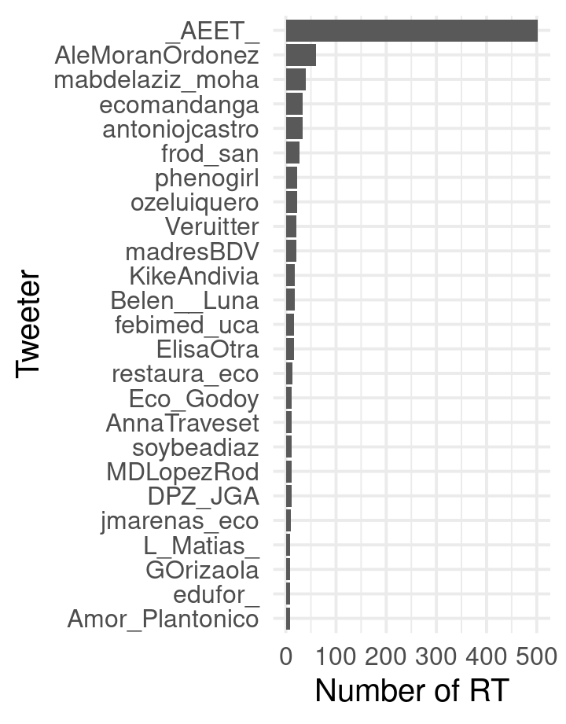
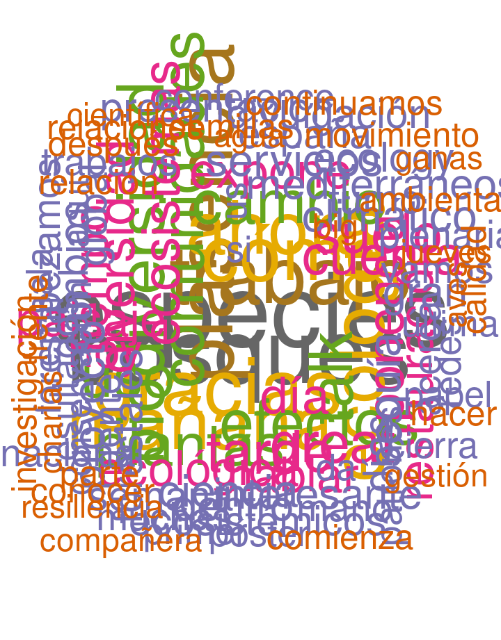
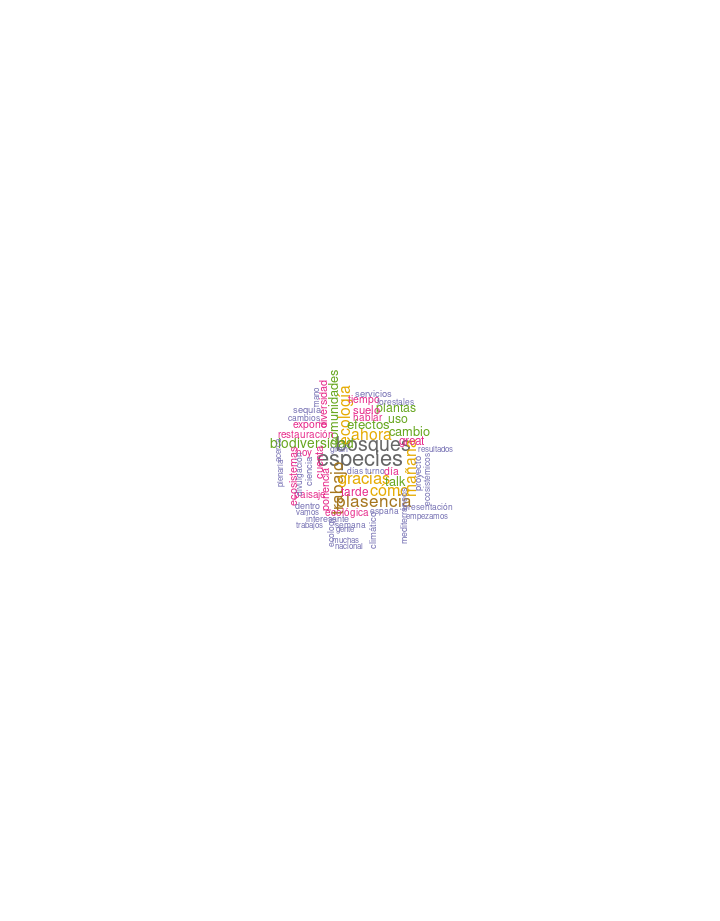
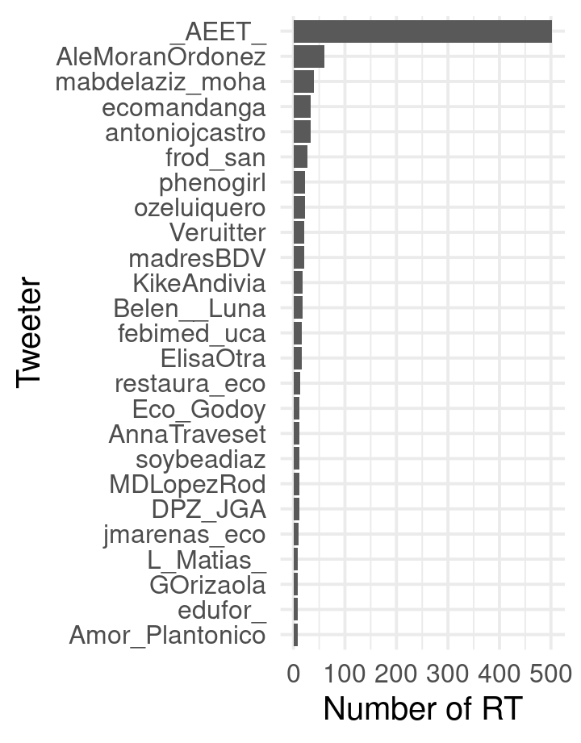
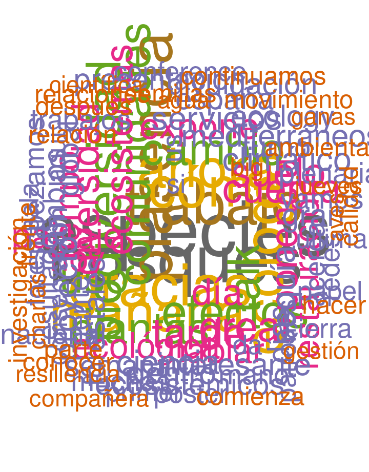
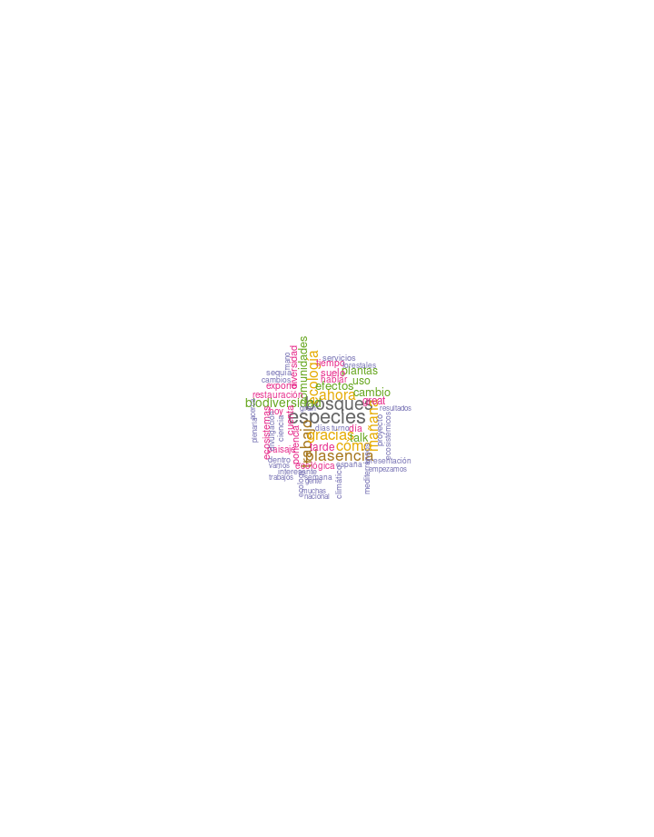

 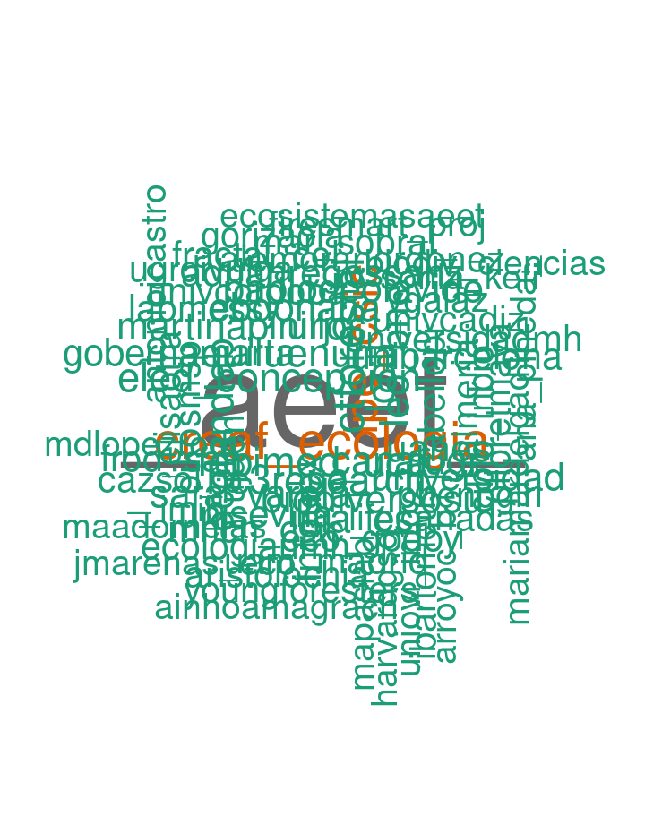
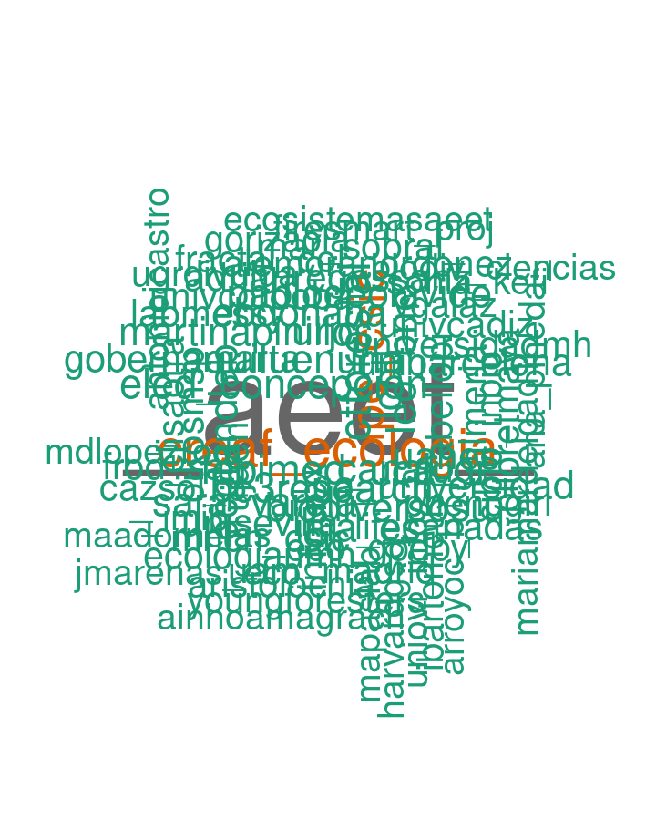

Home
Row
Chart 1
301
Chart 2
81
Chart 3
2124
Chart 4
396
Row
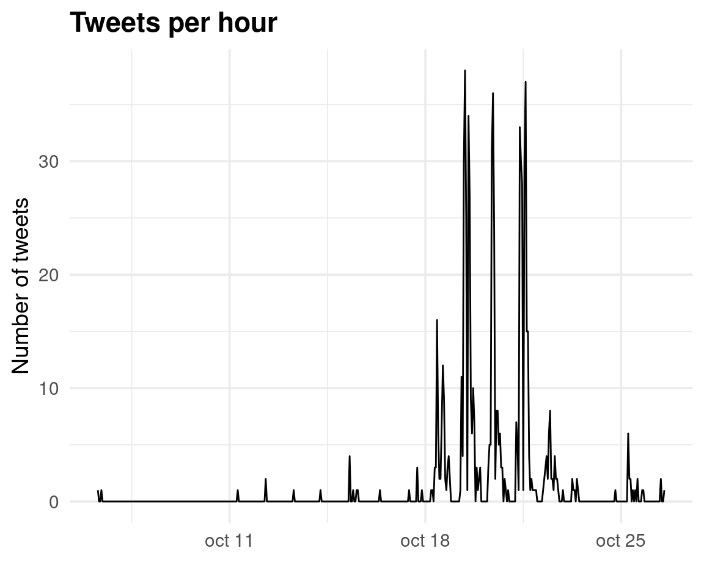
Row
| MOST LIKED | MOST RETWEETED | MOST RECENT |
|---|---|---|
|
|
|
| Tweets |
|---|
| MOST LIKED |
|
| MOST RETWEETED |
|
| MOST RECENT |
|
Row
Last update: 2021-10-20 00:20:46
Top tweets
Column
*** MOST LIKED ***
By listening to grandma(s) we can also study ecology
— Antonio J. Castro (@antoniojcastro) October 19, 2021
Dr. Elisa Oteros @ElisaOtra from @FRACTAL_Col is killing it, what an inspiring title for #AEET2021 folks. @ipbeses @IPBES @PECS_Project pic.twitter.com/rEYKDMuhcz
Pues haciendo caso de los consejos recibidos en el workshop de divulgacin de congreso de la #AEET2021 @_AEET_ me he cambiado la foto de perfil https://t.co/zZ22awjiXD
— Eneko Arrondo (@BIOEAF) October 18, 2021
Inicia el congreso de la @_AEET_ #AEET2021
— Juan Maria Arenas (@jmarenas_eco) October 18, 2021
Un detallito tonto, pero igual intentar tener alguna mujer en la mesa inaugural no hubiera estado mal pic.twitter.com/63VakElBto
7 Slo una semana para el inicio de nuestro XV Congreso #AEET2021!!!
— Asociacin Espaola de Ecologa Terrestre (AEET) (@_AEET_) October 11, 2021
El lunes, tras la ceremonia de inaguracin. empezaremos con la charla plenaria de @_Sara_Varela @MapasLab @uvigo sobre biodiversidad, paleontologa y evolucin. pic.twitter.com/uG6AOpuQvw
Aseguraos de tomar un cafelito despus de comer para no perderos la sesin de Dilogos entre conocimientos ecolgicos locales, tradicionales e indgenas y cientfico-tcnicos! Con @antoniojcastro @ReyesZebensui y un trabajo compartido desde @FRACTAL_Col @aristolochia_ #AEET2021 pic.twitter.com/RneJoPTJV2
— Elisa OtRa (@ElisaOtra) October 19, 2021
#AEET2021 No os perdis el martes el simposio sobre ecologa computacional
— F Rodriguez-Sanchez (@frod_san) October 18, 2021
Martes por la tarde de 15 a 17h, Sala 1 pic.twitter.com/G80ePIajhq
Presentation ready for my next week talk @_AEET_ meeting #AEET2021 in Plasencia, on plastic life histories and adaptation to extreme climates in amphibians (Evolutionary Ecology session; Thursday, 15:45, Room 3). pic.twitter.com/osCUZU9soG
— Germn Orizaola ( +2) (@GOrizaola) October 15, 2021
Here we go @_AEET_!!
— Antonio J. Castro (@antoniojcastro) October 18, 2021
Dr. @_Sara_Varela is opening the 1st #AEET2021 plenary on what can we learn from the past? pic.twitter.com/wuMKfEOlr5
Hoy a las 11h en el Auditorio arrancamos con la primera de las tres sesiones sobre #Ecologa del paisaje #CambioGlobal y #Biodiversidad del congreso #AEET2021 @_AEET_ ! Os esperamos! pic.twitter.com/aGfvnYrIrT
— Dr. Alejandra Morn (@AleMoranOrdonez) October 19, 2021
El @ecologiaUMH de Elche en el congreso de ecologa de la @_AEET_ en Plasencia. Mucha #ciencia aqu! #AEET2021 pic.twitter.com/Hz8jYu95wc
— JuanMa Perez-Garca (@JuanMa_PerGar) October 18, 2021
A punto de escuchar la charla de @ElisaOtra @aristolochia_ Escuchando a las abuelas tambin se estudia ecologa #AEET2021 pic.twitter.com/HqqK2bixtO
— Paula Solascasas (@cazsol_p) October 19, 2021
Ya est disponible el programa de mano del Congreso #AEET2021
— Asociacin Espaola de Ecologa Terrestre (AEET) (@_AEET_) October 6, 2021
Listado completo de ponecias plenarias, temticas, psters, organizacin de salas, actividades paralelas, conciliacin familiar, cdigo de conducta... Ya queda menos!!https://t.co/sKloZ7B7Dy pic.twitter.com/oawQziP7rn
Interesantsima charla sobre la crisis ecolgica del #MarMenor y la interfaz ciencia-gestin a cargo de Miguel ngel Esteve en el congreso de la #AEET2021, en la que muestra entre otras cosas, la disfuncionalidad del comit cientfico encargado de su monitoreo y evaluacin. pic.twitter.com/kINEVejHfX
— ecomandanga (@ecomandanga) October 19, 2021
hasta hace dos das no saba si podra ir a mi primer congreso de la #AEET2021...me siento aliviada de ser la ltima en presentar en mi sesin pero agobiada ya que presento algo completamente nuevo, es la primera vez que no hablo de evolucin floral mediada por polinizadores pic.twitter.com/UUgE6TvSML
— Rocio Perez-Barrales (@RorroDew) October 17, 2021
En estudios basados en capturas en redes de niebla, las aves expulsan la mayora de las semillas (75%) antes de que el investigador llegue a manipularlas. Y esta fraccin de info perdida se ~ con el tamao de las aves y de las semillas. Ms detalles en nuestro pster! #AEET2021 pic.twitter.com/AjCBmWWJUH
— PAISAJE lab (@PAISAJE_lab) October 19, 2021
Comenzando el Congreso de la @_AEET_ #AEET2021 con algunos workshops muy interesantes, como este de divulgacin cientfica con @ana_pineda_ pic.twitter.com/fE8WfLgOkg
— Lara Naves Alegre (@LaraNavesAlegre) October 18, 2021
Inmersin en #AEET2021 pic.twitter.com/R8ZfFlwu1c
— Daniel Moya (@DANIELMOYA_AB) October 19, 2021
1 Ya slo queda un da para que empecemos el Congreso #AEET2021!!!
— Asociacin Espaola de Ecologa Terrestre (AEET) (@_AEET_) October 17, 2021
Y maana empezamos pronto con los talleres pre-congreso: proyectos, divulgacin, big data, Git/GitHub, oratoria y mentoria.
Buen viaje a todos los que os desplacis hoy hasta Plasencia!! pic.twitter.com/kIAVOBuBNi
Comienza el acto oficial de apertura del XV Congreso @_AEET_ #AEET2021 pic.twitter.com/Tbo1or1m2Y
— Asociacin Espaola de Ecologa Terrestre (AEET) (@_AEET_) October 18, 2021
On my way to #AEET2021 by train. Looking forward for my first in person conference since 2019. Do not miss tomorrow out workshop on Ecosystem Resilience
— Enrique Andivia (@KikeAndivia) October 18, 2021
Column
*** MOST RETWEETED ***
7 Slo una semana para el inicio de nuestro XV Congreso #AEET2021!!!
— Asociacin Espaola de Ecologa Terrestre (AEET) (@_AEET_) October 11, 2021
El lunes, tras la ceremonia de inaguracin. empezaremos con la charla plenaria de @_Sara_Varela @MapasLab @uvigo sobre biodiversidad, paleontologa y evolucin. pic.twitter.com/uG6AOpuQvw
Aseguraos de tomar un cafelito despus de comer para no perderos la sesin de Dilogos entre conocimientos ecolgicos locales, tradicionales e indgenas y cientfico-tcnicos! Con @antoniojcastro @ReyesZebensui y un trabajo compartido desde @FRACTAL_Col @aristolochia_ #AEET2021 pic.twitter.com/RneJoPTJV2
— Elisa OtRa (@ElisaOtra) October 19, 2021
Interesantsima charla sobre la crisis ecolgica del #MarMenor y la interfaz ciencia-gestin a cargo de Miguel ngel Esteve en el congreso de la #AEET2021, en la que muestra entre otras cosas, la disfuncionalidad del comit cientfico encargado de su monitoreo y evaluacin. pic.twitter.com/kINEVejHfX
— ecomandanga (@ecomandanga) October 19, 2021
Hoy a las 11h en el Auditorio arrancamos con la primera de las tres sesiones sobre #Ecologa del paisaje #CambioGlobal y #Biodiversidad del congreso #AEET2021 @_AEET_ ! Os esperamos! pic.twitter.com/aGfvnYrIrT
— Dr. Alejandra Morn (@AleMoranOrdonez) October 19, 2021
Ya est disponible el programa de mano del Congreso #AEET2021
— Asociacin Espaola de Ecologa Terrestre (AEET) (@_AEET_) October 6, 2021
Listado completo de ponecias plenarias, temticas, psters, organizacin de salas, actividades paralelas, conciliacin familiar, cdigo de conducta... Ya queda menos!!https://t.co/sKloZ7B7Dy pic.twitter.com/oawQziP7rn
Inicia el congreso de la @_AEET_ #AEET2021
— Juan Maria Arenas (@jmarenas_eco) October 18, 2021
Un detallito tonto, pero igual intentar tener alguna mujer en la mesa inaugural no hubiera estado mal pic.twitter.com/63VakElBto
A dashboard to explore tweets from #AEET2021 conference @_AEET_ going on this week.
— F Rodriguez-Sanchez (@frod_san) October 18, 2021
Made with #rstats flexdashboardhttps://t.co/NVZt5BLgPE pic.twitter.com/zxSsiUvG7Y
By listening to grandma(s) we can also study ecology
— Antonio J. Castro (@antoniojcastro) October 19, 2021
Dr. Elisa Oteros @ElisaOtra from @FRACTAL_Col is killing it, what an inspiring title for #AEET2021 folks. @ipbeses @IPBES @PECS_Project pic.twitter.com/rEYKDMuhcz
Carlos Javier Dur-Aleman cierra la sesin matutina de #DialogosCienciaySociedad en la #AEET2021 hablando sobre cmo repercuten las ltimas sentencias del Tribunal de Justicia de la Unin Europea en la gestin del #lobo en Espaa @CIEDA_CIEMAT @CIEMAT_OPI pic.twitter.com/66QLjhbDPD
— Asociacin Espaola de Ecologa Terrestre (AEET) (@_AEET_) October 19, 2021
Excelente la sesin de interfaz ciencia-gestin-sociedad de esta maana en #AEET2021! Gracias a tod@s l@s ponentes que han participado y a @M_Viota por compartir la coordinacin de la sesin! pic.twitter.com/X0GaCxJ7cn
— M.D. Lpez-Rodrguez (@MDLopezRod) October 19, 2021
#AEET2021 No os perdis el martes el simposio sobre ecologa computacional
— F Rodriguez-Sanchez (@frod_san) October 18, 2021
Martes por la tarde de 15 a 17h, Sala 1 pic.twitter.com/G80ePIajhq
En estudios basados en capturas en redes de niebla, las aves expulsan la mayora de las semillas (75%) antes de que el investigador llegue a manipularlas. Y esta fraccin de info perdida se ~ con el tamao de las aves y de las semillas. Ms detalles en nuestro pster! #AEET2021 pic.twitter.com/AjCBmWWJUH
— PAISAJE lab (@PAISAJE_lab) October 19, 2021
.. y nuestra segunda sesin plenaria #AEET2021 del martes 19 (6PM) estar a cargo de Marta Goberna @GobernaMarta @INIA_es que nos hablar sobre las comunidades microbionas y el funcionamiento de los ecosistemas terrestres. pic.twitter.com/LOzYjff0Uj
— Asociacin Espaola de Ecologa Terrestre (AEET) (@_AEET_) October 12, 2021
1 Ya slo queda un da para que empecemos el Congreso #AEET2021!!!
— Asociacin Espaola de Ecologa Terrestre (AEET) (@_AEET_) October 17, 2021
Y maana empezamos pronto con los talleres pre-congreso: proyectos, divulgacin, big data, Git/GitHub, oratoria y mentoria.
Buen viaje a todos los que os desplacis hoy hasta Plasencia!! pic.twitter.com/kIAVOBuBNi
Ahora @maria_losada de @eco_past @UniversidadeUSC nos habla de biodiversidad funcional de animales y plantas y ciclo biogeoqumico del Carbn en el Amazonas#AEET2021 #BigData pic.twitter.com/F0reCiogX0
— Asociacin Espaola de Ecologa Terrestre (AEET) (@_AEET_) October 19, 2021
Learning a little bit about #outreach in #AEET2021 @gonza_ganda @PielSuelo @BIOEAF @_AEET_ pic.twitter.com/w3ADKoVGWg
— FERNANDA ALVES MARTINS (@FerAlvesMartins) October 18, 2021
Workshop de divulgacin en la #AEET2021 Nos ponemos al da en twitter. @ana_pineda_ @ecomandanga @_AEET_ @FunEcology pic.twitter.com/F32IDSV47X
— Hugo Saiz (@HugoSaizB) October 18, 2021
La prxima semana, cuatro de nuestros investigadores participarn en el XV Congreso de la @_AEET_ #AEET2021, con charlas en las sesiones:
— IMIB - Instituto Mixto Investigacin Biodiversidad (@_IMIB_) October 15, 2021
Ecologa del movimiento: @mariamardelgad1
Ecosistemas aislados: Paola Laiolo y @BorjaJimAlf
Ecologa evolutiva: @GOrizaola pic.twitter.com/ziRQ3hSAs4
Ya ha comenzado el taller sobre seguimiento de la Biodiversidad en la era del Big Data en el congreso #AEET2021 en @infouex de Plasencia
— Laura HM (@LauHMT) October 18, 2021
con @JMAlvarezMtnez y CristinaGomez y muchos ms. pic.twitter.com/tkFTytXJyS
5 das para el inicio de nuestro XV Congreso #AEET2021!!!
— Asociacin Espaola de Ecologa Terrestre (AEET) (@_AEET_) October 13, 2021
El mircoles 20, empezaremos el da (9AM) con la sesin plenaria de Mara Dornelas @maadornelas @CentreBioDiv @YoungAcademySco sobre tendencias en biodiversidad a lo largo del espacio y el tiempo. pic.twitter.com/3wTTw58r8S
Column
*** MOST RECENT ***
Comit cientfico del Mar Menor.
— Profes por el futuro (@future_spain) October 19, 2021
Buenas practicas y (algunas) disfuncionalidades.
(Ampliar imagen) #AEET2021 https://t.co/GzSJQVHHgJ
Jueves, 21/10, a las 12.00h presentar en la Sala 3 del congreso #AEET2021 el trabajo de @AdApta_Lab sobre el potencial evolutivo de las poblaciones marginales.@_AEET_ pic.twitter.com/nxJS30p0Zn
— Carlos Lara-Romero, Ph.D (@carlos_lara0) October 19, 2021
Muchas gracias a todas las personas que habis participado y contribuido a la sesin ST11 #secretosecologicosmadera del congreso #AEET2021 de la @_AEET_ ! #dendroecologa #anatoma @AnaGCervigon @miguelgarhid @dendrosur pic.twitter.com/s8G9mCuqEH
— Alba Anadon-Rosell (@alba_anadon) October 19, 2021
Maana, 20/10, a las 12.00h estar en la Sala 3 del congreso #AEET2021 hablando sobre el @POEM_experiment y los mecanismos de #PriorityEffects @_AEET_ pic.twitter.com/1eLCdUpvuh
— Ins AC (@InesACrespo) October 19, 2021
#EcologayEducacin Mara Mayorga @InNaturaSpain cierra la mesa redonda destacando la necesidad de la permanencia y regularidad en entornos naturales para conectar con la naturaleza #AEET2021
— Asociacin Espaola de Ecologa Terrestre (AEET) (@_AEET_) October 19, 2021
#EcologayEducacin @ebaquerom seala la necesidad de cambio en transporte y consumo, y la importa de las acciones individuales frente a la crisis ambiental #AEET2021
— Asociacin Espaola de Ecologa Terrestre (AEET) (@_AEET_) October 19, 2021
#EcologayEducacin @MiriamLeiros @FutureSpain_ menciona la necesidad de cambiar el concepto de calidad de vida y seala los puntos positivos de nuevas leyes educativas que ponen ms peso en la educacin ambiental. #AEET2021
— Asociacin Espaola de Ecologa Terrestre (AEET) (@_AEET_) October 19, 2021
#EcologiayEducacin Charo Morn @garuacoop @ecologistas seala la prisa necesaria para tomar medidas que combatan la crisis eco-social, y la necesidad de una nueva cultura de la tierra#AEET2021 https://t.co/n816E7hDP2
— Asociacin Espaola de Ecologa Terrestre (AEET) (@_AEET_) October 19, 2021
De hoy, me quedo con la sabidura de Francisco Garca Novo con su charla sobre desnaturalizacin y su frase "Paisaje es la parte de la naturaleza que esta nos deja percibir" @_AEET_ #AEET2021 pic.twitter.com/ICwCzbVTK1
— Juan Antonio Hernndez-Agero (@HernandezAguer) October 19, 2021
La mesa redonda #EcologiayEducacin que se desarrolla ahora mismo, y que s controlamos nosotros, es un mejor ejemplo de cmo nos gusta hacer las cosas #AEET2021 pic.twitter.com/oDyQEVXOwv
— Asociacin Espaola de Ecologa Terrestre (AEET) (@_AEET_) October 19, 2021
#EcologiayEducacin @MiriamLeiros echa en falta una campaa de comunicacin masiva que informe a la sociedad de la crisis ambiental actual, y ms contenido ambiental en los medios de comunicacin. #AEET2021
— Asociacin Espaola de Ecologa Terrestre (AEET) (@_AEET_) October 19, 2021
#EcologiayEducacin Charo Morn habla sobre el informe @ecologistas 99 preguntas y 99 experiencias para vivir en un mundo justo y sostenible. #AEET2021 https://t.co/7El7avcomG
— Asociacin Espaola de Ecologa Terrestre (AEET) (@_AEET_) October 19, 2021
Mesa redonda: "ecologa en la educacin" #AEET2021 @_AEET_ @FXPicoMercader pic.twitter.com/TaZ83Ii7wo
— Mohamed Abdelaziz (Moha) (@mabdelaziz_moha) October 19, 2021
Como colofn a la completita jornada de #AEET2021, mesa redonda sobre cmo introducir la #ecologa en la #educacin. Debate urgente y necesario dado el gran dficit de #naturaleza que est presente a todos los niveles educativos (incluso en estudiantes de Biologa o CCAA) pic.twitter.com/UeNhURV1vO
— ecomandanga (@ecomandanga) October 19, 2021
Enrique Baquero @ebaquerom plantea la necesidad de que la enseanza universitaria rellene huecos sobre conceptos ecolgicos que faltan al llegar a esa etapa, claves para entender la crisis ambiental actual. #AEET2021 pic.twitter.com/7opMjzQvnF
— Asociacin Espaola de Ecologa Terrestre (AEET) (@_AEET_) October 19, 2021
Mi compi @inesgutbri de la @UAM_Madrid junto al pster que presenta en el congreso de la #AEET2021 pic.twitter.com/mXLlHckuTS
— Paula Solascasas (@cazsol_p) October 19, 2021
Charo Morn @garuacoop aboga por un cambio cultural que incluya la crisis ambiental y social dentro de los temarios educativos. #AEET2021 pic.twitter.com/I2d4GRs00e
— Asociacin Espaola de Ecologa Terrestre (AEET) (@_AEET_) October 19, 2021
Miriam Leirs @MiriamLeiros @FutureSpain_ destaca la necesidad de legislar apara incorporar las cuestiones ambientales en los currculums educativos. #AEET2021 pic.twitter.com/0M95X7w8Me
— Asociacin Espaola de Ecologa Terrestre (AEET) (@_AEET_) October 19, 2021
Continua el debate sobre #BigData con la mesa redonda en el #AEET2021 pic.twitter.com/z5yqnpwYQe
— Asociacin Espaola de Ecologa Terrestre (AEET) (@_AEET_) October 19, 2021
Great journey in the annual meeting of the Spanish Society of Terrestrial Ecology, #AEET2021, in such a great location in Extremadura, meeting old friends and great colleagues. Looking forward to tomorrow. pic.twitter.com/P64EjV9GsV
— Ciro Cabal, PhD (@ciro_cabal) October 19, 2021
Top tweeters
Column
MOST ACTIVE
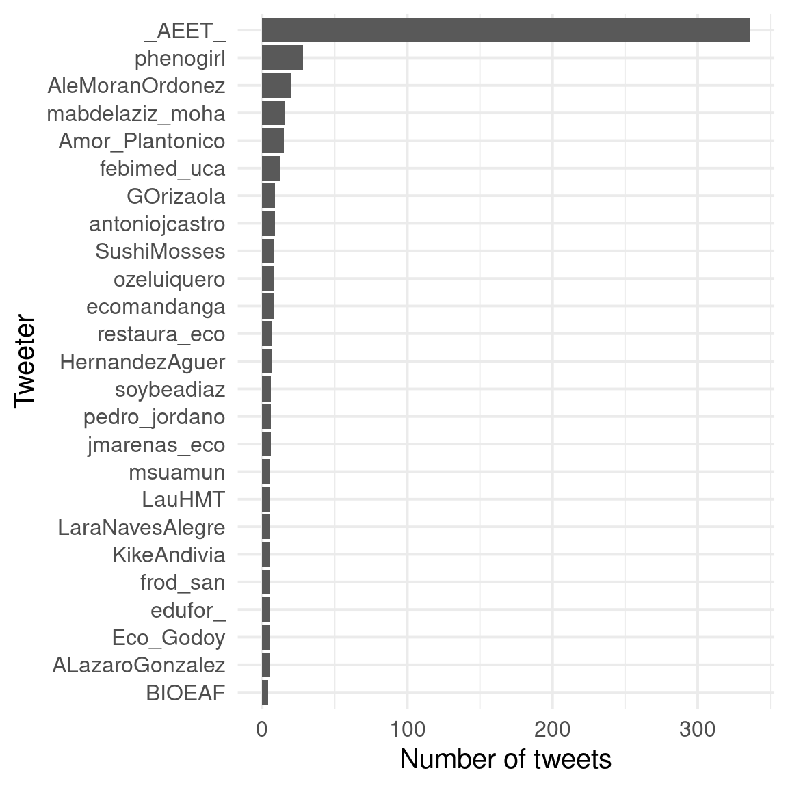
Column
MOST LIKED

Column
MOST RETWEETED
Top words
Wordcloud
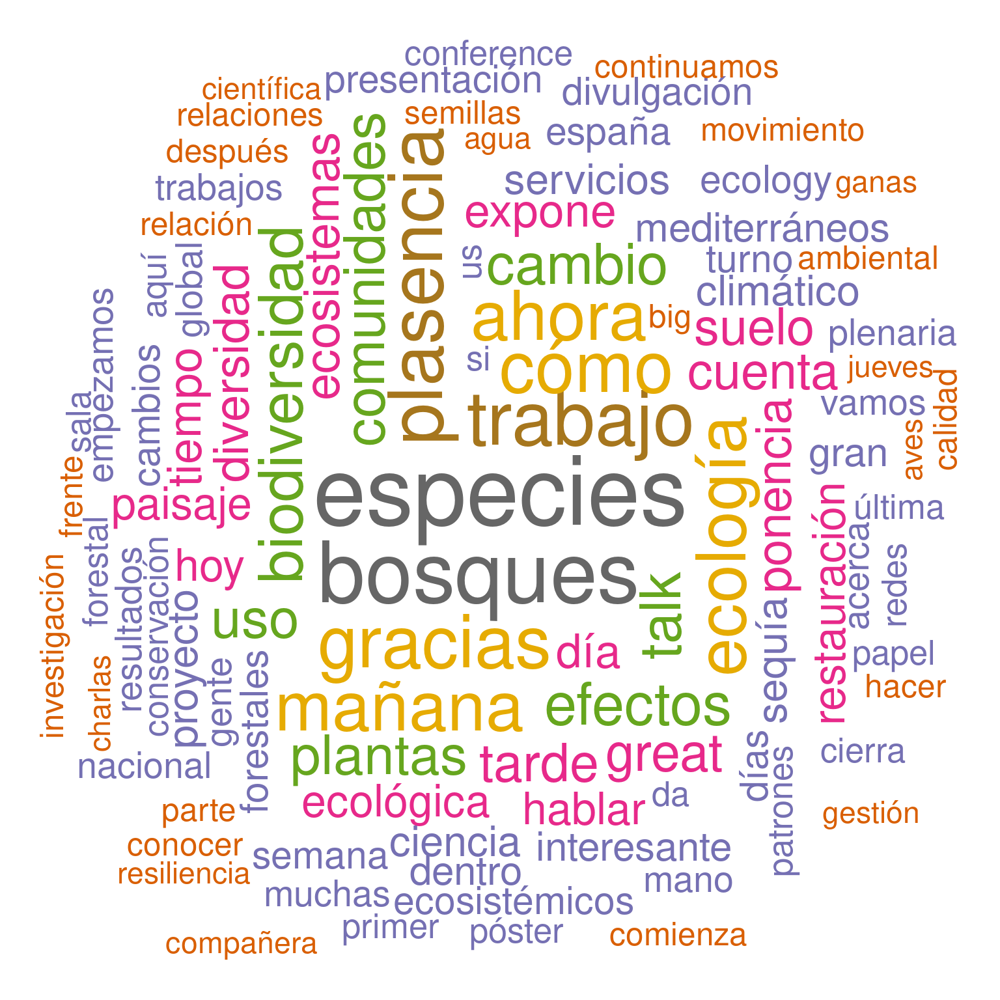
Wordcloud
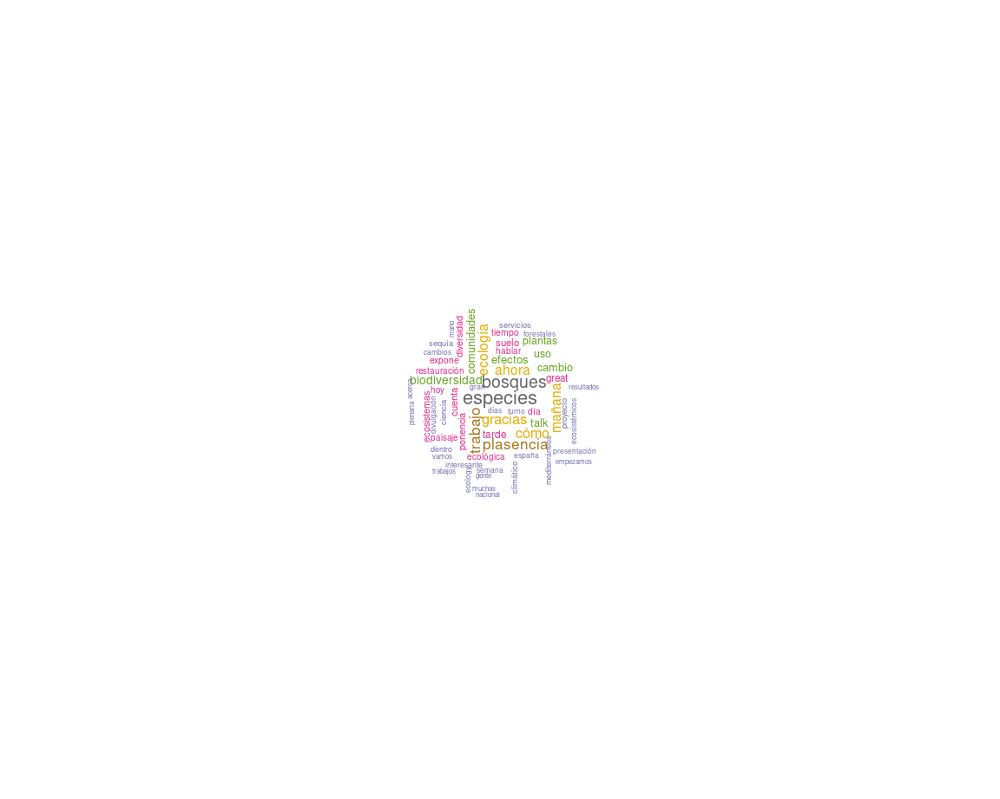
Top hashtags
Wordcloud

Wordcloud
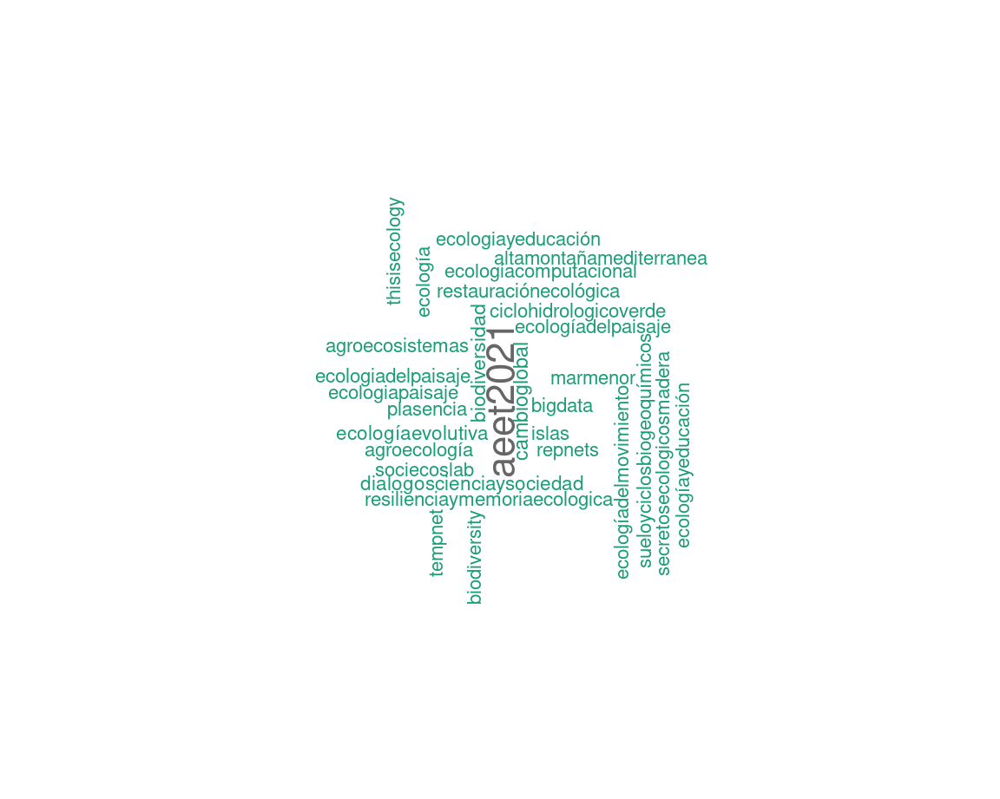
Top mentions
Wordcloud

Wordcloud